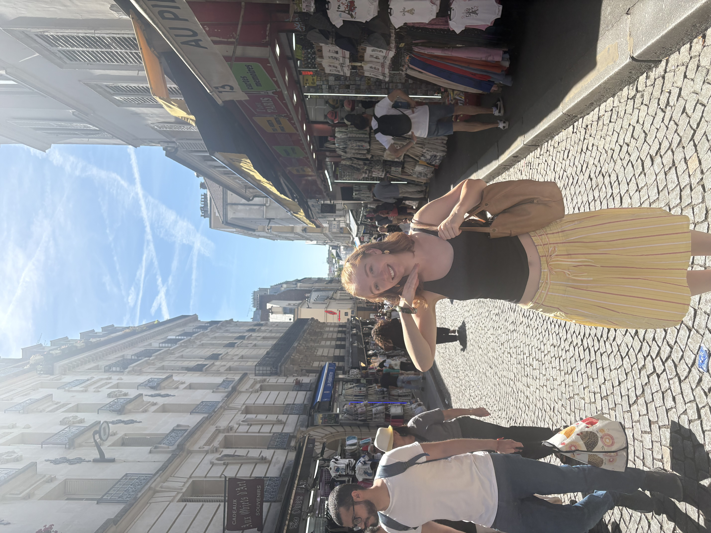

I am a 4th year at Northeastern University studying Data Science and International Affairs. A lot of people consider this a random combination, but to me it makes perfect sense. Data plays a key role in foreign policy decisions and allows policy-makers to make informed decisions that actually help people.
My first experience traveling outside of the US was in high school when I went on a 10-month exchange to Germany for the duration of my Junior year. This experience was incredibly formative and made me the person I am today. It gave me lifelong friendships, the ability to speak another language, and changed my life in ways I cannot express. It also showed me how much I enjoy and learn from traveling.
This summer I had the privilege of taking part in one of Northeastern's Dialogue of Civilizations. For a month, I studied EU Politics and Migration in Rotterdam, Netherlands with a cohort of fellow Northeastern students. Because I knew I would already be traveling to Europe for this program, I made plans to visit my host family in Germany and travel with my host sister before it began. I also made plans to travel around Europe with two of my friends from the program. This summer I was in Europe for 66 days, and I visited 8 different countries, check out the second page to learn more about my travels!